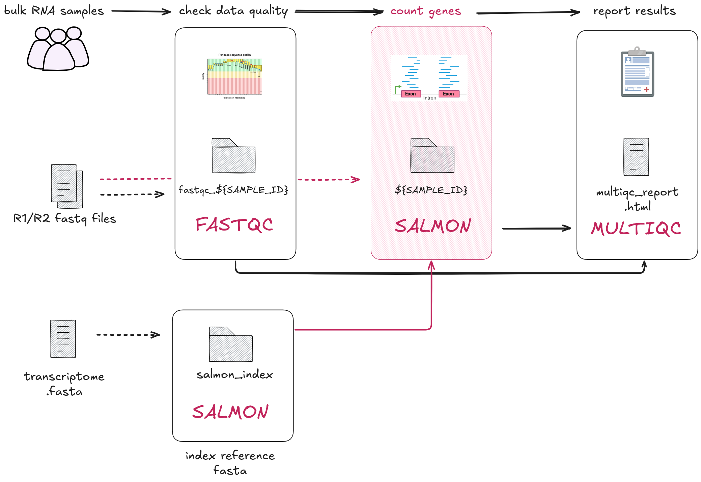

2.3 Multiple inputs into a single process
Learning objectives
- Implement a process with multiple input channels.
- Understand the importance of creating channels from process outputs.
- Implement chained Nextflow processes with channels.
In this lesson we will transform the bash script 02_quant.sh into a process called QUANTIFICATION. This step focuses on the next phase of RNAseq data processing: quantifying the expression of transcripts relative to the reference transcriptome.
To do this, we will need to run Salmon's quant mode over the paired-end reads and the transcriptome index.

Open the bash script 02_quant.sh.
SAMPLE_ID=gut
READS_1="data/ggal/${SAMPLE_ID}_1.fq"
READS_2="data/ggal/${SAMPLE_ID}_2.fq"
salmon quant \
--libType=U \
-i results/salmon_index \
-1 ${READS_1} \
-2 ${READS_2} \
-o results/${SAMPLE_ID}
Same as the previous lesson, this script contains the ${SAMPLE_ID} variable defintions which is used to connect sample names to fastq file paths. Within the salmon quant execution command:
--libType=Uis a required argument for Salmon.-i results/salmon_indexis the directory output by theINDEXprocess.-1and-2are flags for the respective paired reads (.fq).-ooutputs files into a directory calledresults/gut
2.3.1 Building the process
1. Process directives
Here is the empty process template with the container and publishDir
directives we'll be using to get you started. Add this to your main.nf after where you defined the FASTQC process.
process QUANTIFICATION {
container "quay.io/biocontainers/salmon:1.10.1--h7e5ed60_0"
publishDir "results", mode: 'copy'
input:
< process inputs >
output:
< process outputs >
script:
"""
< script to be executed >
"""
}
It contains:
- Prefilled process directives
containerandpublishDir. - The empty
input:block for us to define the input data for the process. - The empty
output:block for us to define the output data for the process. - The empty
script:block for us to define the script for the process.
2. Define the process script
Update the script definition with the Salmon command from the bash script:
process QUANTIFICATION {
container "quay.io/biocontainers/salmon:1.10.1--h7e5ed60_0"
publishDir "results", mode: 'copy'
input:
< process inputs >
output:
< process outputs >
script:
"""
salmon quant --libType=U -i $salmon_index -1 $reads_1 -2 $reads_2 -o $sample_id
"""
}
The --libType=U is a required argument and can be left as is for the script definition. It can stay the same as in the bash script. The following need to be adjusted for the QUANT process:
-i results/salmon_indexis the directory output by theINDEXprocess.-1 $reads_1and-2 $reads_2are fastq files from the previously definedreads_chchannel.-ooutputs files into a directory named after the$sample_id.
3. Define the process output
The output is a directory of $sample_id. In this case, it will be a
directory called gut/. Replace < process outputs > with the following:
process QUANTIFICATION {
container "quay.io/biocontainers/salmon:1.10.1--h7e5ed60_0"
publishDir "results", mode: 'copy'
input:
< process inputs >
output:
path "$sample_id"
script:
"""
salmon quant --libType=U -i $salmon_index -1 $reads_1 -2 $reads_2 -o $sample_id
"""
}
4. Define the process input
In this step we will define the process inputs. Based on the bash script, we have four inputs:
$salmon_index$sample_id$reads_1$reads_2
These should look familiar!
The $salmon_index was output by the INDEX process, and $sample_id,
$reads_1, $reads_2 are output by our reads_in. We will see how to
chain these when we work on the workflow scope below.
First, add the input definition for $salmon_index. Recall that we use the
path qualifier as it is a directory:
process QUANTIFICATION {
container "quay.io/biocontainers/salmon:1.10.1--h7e5ed60_0"
publishDir "results", mode: 'copy'
input:
path salmon_index
output:
path "$sample_id"
script:
"""
salmon quant --libType=U -i $salmon_index -1 $reads_1 -2 $reads_2 -o $sample_id
"""
}
Secondly, add the tuple input:
process QUANTIFICATION {
container "quay.io/biocontainers/salmon:1.10.1--h7e5ed60_0"
publishDir "results", mode: 'copy'
input:
path salmon_index
tuple val(sample_id), path(reads_1), path(reads_2)
output:
path "$sample_id"
script:
"""
salmon quant --libType=U -i $salmon_index -1 $reads_1 -2 $reads_2 -o $sample_id
"""
}
Matching process inputs
Recall that the number of inputs in the process input block and the workflow must match!
If you have multiple inputs they need to be listed across multiple lines in the input block and listed inside the brackets in the workflow block.
You have just defined a process with multiple inputs!
How's it going?
Once you have defined the process block, select the "Yes" react on Zoom.
5. Call the process in the workflow scope
Recall that the inputs for the QUANTIFICATION process are emitted by the
reads_in channel and the output of the INDEX process. The reads_in channel
is ready to be called by the QUANTIFICATION process. Similarly, we need to
prepare a channel for the index files output by the INDEX process.
Add the following channel to your main.nf file, after the FASTQC process:
// Define the workflow
workflow {
// Run the index step with the transcriptome parameter
INDEX(params.transcriptome_file)
// Define the fastqc input channel
reads_in = Channel.fromPath(params.reads)
.splitCsv(header: true)
.map { row -> [row.sample, file(row.fastq_1), file(row.fastq_2)] }
// Run the fastqc step with the reads_in channel
FASTQC(reads_in)
// Define the quantification channel for the index files
transcriptome_index_in = INDEX.out[0]
}
Accessing process outputs
Nextflow allows us to explicitly define the output of a channel using the .out attribute. If a process has 2 or more output channels, you can access them by indexing the .out attribute. For example: .out[0] for the first output, .out[1] for the second output.
Alternatively, the process output definition allows the use of the emit statement to define a named identifier that can be used to reference the channel in the external scope.
Call the QUANTIFICATION process in the workflow scope and add the inputs by adding the following line to your main.nf file after your transcriptome_index_in channel definition:
// Define the workflow
workflow {
// Run the index step with the transcriptome parameter
INDEX(params.transcriptome_file)
// Define the fastqc input channel
reads_in = Channel.fromPath(params.reads)
.splitCsv(header: true)
.map { row -> [row.sample, file(row.fastq_1), file(row.fastq_2)] }
// Run the fastqc step with the reads_in channel
FASTQC(reads_in)
// Define the quantification channel for the index files
transcriptome_index_in = INDEX.out[0]
// Run the quantification step with the index and reads_in channels
QUANTIFICATION(transcriptome_index_in, reads_in)
}
By doing this, we have passed two arguments to the QUANTIFICATION process as there are two inputs in the process definition.
Run the workflow:
Your output should look like:
Launching `main.nf` [shrivelled_cuvier] DSL2 - revision: 4781bf6c41
executor > local (1)
[de/fef8c4] INDEX | 1 of 1, cached: 1 ✔
[bb/32a3aa] FASTQC (1) | 1 of 1, cached: 1 ✔
[a9/000f36] QUANTIFICATION (1) | 1 of 1 ✔
A new QUANTIFICATION task has been successfully run and have a results/gut
folder, with an assortment of files and directories.
Summary
In this lesson you have learned:
- How to define a process with multiple input channels
- How to access a process output with
.out - How to create a channel from a process output
- How to chain Nextflow processes with channels